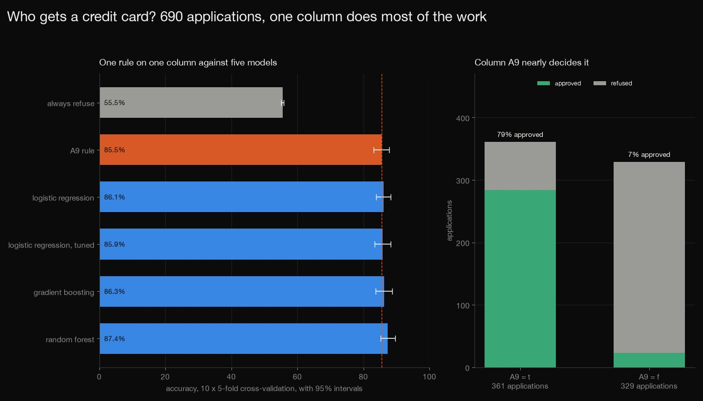
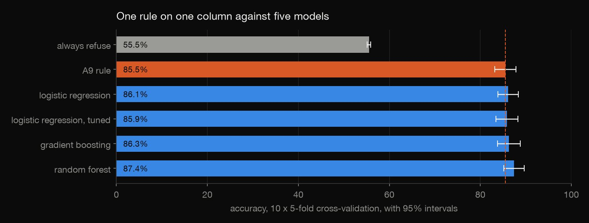
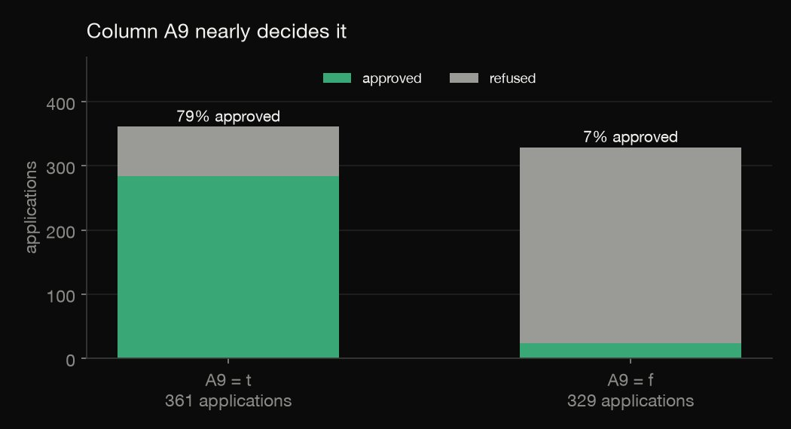
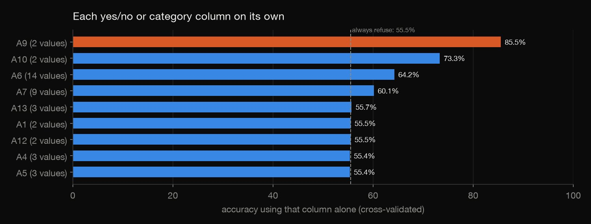
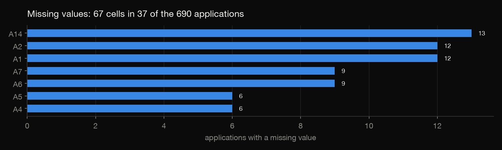

Python · Predictive modeling · 2026-10
Who Gets a Credit Card?
690 credit card applications with the column names hidden: one yes/no column gets 85.5% of the bank's decisions right on its own, and the best of five models adds only 1.9 points, a gain that a sample this small cannot tell from chance.

The columns are anonymous (A1 to A15, with values replaced by symbols), so what they mean is not known and nothing can be said about fairness. The label is the bank's own past decision, read as + approved and − refused, not whether the customer repaid. 690 applications is a small sample: the intervals are about 2.3 points either side, so a gap of one or two points between two models cannot be resolved.
01 — The problem
A bank gets a credit card application and says yes or no. Can a model predict the decision, and does it do any better than the simplest rule you could write?
The questions follow DataCamp's "Predicting Credit Card Approvals" project and GeeksforGeeks' "Credit Card Approvals Analysis & Predictions": both use the same dataset, UCI's Credit Approval, 690 real applications whose column names and values the bank replaced with meaningless symbols, so one project answers both.
02 — What I built
690 applications, audited and modelled:
- Audit: class balance, missing values, duplicates, and which column separates the outcomes.
- Six contenders on the same folds: always refuse, the one-line rule "approve if A9 = t", logistic regression (plain and tuned), gradient boosting and a random forest, in 10 × 5-fold cross-validation.
- Honest uncertainty: 95% intervals corrected for overlapping training sets, and every model compared with the rule on the same folds.
- Check:
check.pyrecomputes 686 numbers and refits the plain logistic regression by hand on all 50 folds.
03 — How it was built
- 01
Download the applications
UCI's dataset 27 (CC BY 4.0, donated by J. R. Quinlan): six numeric and nine category columns and the bank's decision. The file notes that every name and value was changed to meaningless symbols to protect confidentiality, and it does not say what + and − mean; approved and refused is the usual reading. It is 14 KB, so the file is committed with its checksum.
- 02
Audit before modelling
307 of the 690 applications are marked + (44.5%), so refusing everyone is right 55.5% of the time. 37 applications have a missing value (67 cells), and no row is duplicated. One column stands out: 78.7% of the 361 applications with A9 = t were approved, against 7.0% of the 329 with A9 = f.
- 03
Six contenders, the same folds
Always refuse; the A9 rule; logistic regression; logistic regression with its penalty chosen by cross-validation inside each training set (five values tried); scikit-learn's histogram gradient boosting; and a random forest of 300 trees. Ten repeats of 5-fold cross-validation with identical folds for every model, and missing values filled in inside each fold (the median for numbers, the commonest value for categories).
splits = list(RepeatedStratifiedKFold(n_splits=SPLITS, n_repeats=REPEATS, random_state=0).split(X, y)) - 04
Put honest intervals on the scores
The 50 fold scores are not independent, because the training sets overlap, so a plain interval would be too narrow. The Nadeau–Bengio correction inflates the variance of their mean, and each model is compared with the A9 rule on the same folds.
se = np.sqrt((1 / J + n_test_over_train) * v.var(ddof=1)); t = stats.t.ppf(0.975, J - 1) - 05
Test each column alone
For each of the nine category columns, every application is predicted by the majority outcome of its category in the training folds (a missing value counts as its own category). It shows where the signal is: A9 alone gets 85.5%, and five of the columns do no better than refusing everyone.
lab = pd.Series(y[tr]).groupby(X[c].iloc[tr].fillna("?").to_numpy()).mean() >= 0.5 - 06
Recompute it by hand
check.pyrecomputes 686 numbers with different code: the audit from the raw file, every fold's accuracy and AUC from the saved predictions (the AUC by a rank formula), the corrected intervals from textbook formulas, the single-column rules, and the plain logistic regression refitted by hand on all 50 folds with its own imputation, scaling, one-hot columns and a ridge-penalised Newton–Raphson. Its predictions match scikit-learn's to 1.1e-6 once the solver's tolerance is tightened; at the default setting they differed by about 0.005. The other models are not refitted.step = np.linalg.solve(C * Z.T @ (Z * (p * (1 - p))[:, None]) + pen, C * Z.T @ (p - y) + pen @ b) b -= step
04 — Results

| Model | Accuracy | 95% CI | AUC |
|---|---|---|---|
| Always refuse | 55.5% | 55.1–55.9 | 0.50 |
| A9 rule | 85.5% | 83.2–87.9 | 0.86 |
| Logistic | 86.1% | 83.8–88.3 | 0.93 |
| Logistic, tuned | 85.9% | 83.5–88.3 | 0.92 |
| Boosting | 86.3% | 83.8–88.8 | 0.93 |
| Forest | 87.4% | 85.2–89.6 | 0.93 |
The models barely beat one column. The one-line rule "approve if A9 = t" is right on 85.5% of applications (95% interval 83.2 to 87.9), with no model behind it. Logistic regression gets 86.1%, its tuned version 85.9%, gradient boosting 86.3% and a random forest 87.4%.
| Model | Gain | 95% CI | p |
|---|---|---|---|
| Logistic | +0.6 | −1.7 to +2.8 | 0.62 |
| Logistic, tuned | +0.3 | −2.1 to +2.8 | 0.78 |
| Boosting | +0.8 | −1.8 to +3.3 | 0.55 |
| Forest | +1.9 | −0.2 to +3.9 | 0.07 |
The gains are inside the noise. The columns are each model's gain over the rule in accuracy points on the same folds, its corrected 95% interval and p-value. The forest gains 1.9 points, with an interval of −0.2 to +3.9 (p = 0.07); the other three gain 0.3 to 0.8 points and their intervals include zero. On ranking the models score higher: an AUC of 0.92 to 0.93 against 0.86 for the rule, which can only say yes or no. The AUC differences were not given intervals here.

One column does most of the work. 361 of the 690 applications have A9 = t and 78.7% of them were approved, against 7.0% of the 329 with A9 = f. Overall 307 applications (44.5%) were approved, so a model that refuses everyone is right 55.5% of the time.

The other columns. A10 alone gets 73.3%, A6 (14 values) 64.2% and A7 (9 values) 60.1%. The other five columns (A13, A1, A12, A4 and A5) are within 0.3 points of refusing everyone, between 55.4% and 55.7%.

Missing values. 37 applications have at least one (67 cells in all); A14 has the most, 13, then A1 and A2 with 12 each. Each fold fills them in from its own training set, so no test application leaks into the fill-in.
05 — What I'd do next
- Find what the columns mean, or a similar open dataset with real column names, so the models can be checked for fairness: whether any column stands in for a protected characteristic.
- Score the models on whether customers repaid, not on the bank's past decision; this data has no repayment record.
- Give the AUC differences intervals too, and test on a second sample: with 690 rows, a gain of one or two points needs new data to confirm.